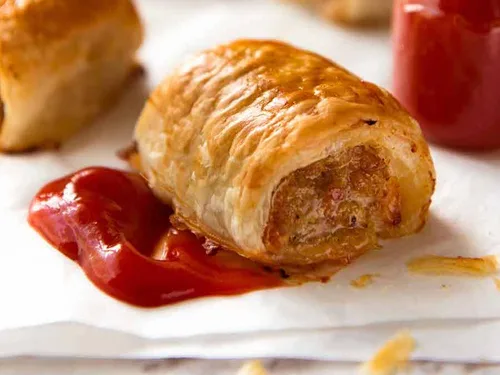

Sausage Rolls

Introduction
Sausage rolls have been a beloved snack for centuries, with their
origins traced back to Western Europe. The concept of wrapping
seasoned meat in pastry has been a part of culinary traditions in
various cultures, but the modern sausage roll as we know it today is
commonly associated with British cuisine. It is believed that the
sausage roll was first created in the United Kingdom in the 19th
century, and it has since become a staple in bakeries, cafes, and
households across the country.
Ingredients
-
1 (17.3 ounce) package frozen puff pastry sheets, thawed
- 1/4 cup Dijon mustard
- 1 (16 ounce) package pork sausage meat or ground pork
- 1 large egg, beaten
Instructions
- Preheat the oven to 400 degrees F (200 degrees C).
-
Unfold puff pastry sheets. Cut along the fold lines of each
sheet to form 6 equal squares for a total of 12 squares. Brush
each square with mustard.
-
Divide sausage into 12 equal pieces and roll into small logs.
Place one log onto each square. Roll dough around sausage and
lightly brush dough with beaten egg to seal. Place rolls onto an
ungreased baking sheet. Brush the tops with remaining beaten
egg.
-
Bake in the preheated oven for 10 minutes. Check to ensure they
aren't burning, then continue to bake until puffed and golden,
about 10 more minutes. An instant-read thermometer inserted into
the center of a roll should read at least 160 degrees F (70
degrees C).
Back to Odin Recipes